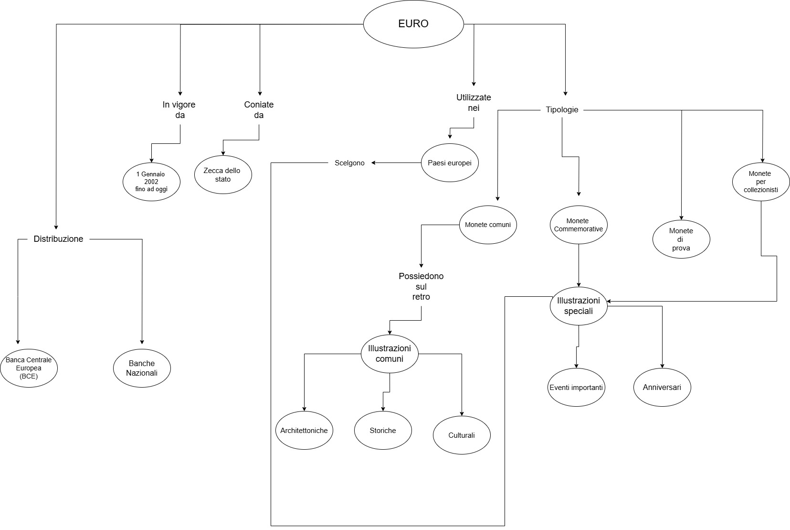
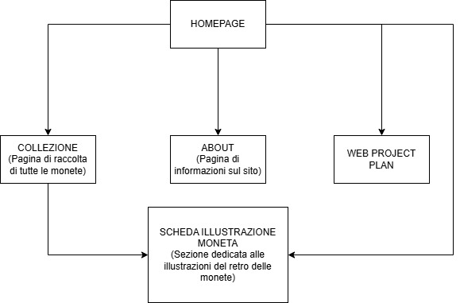
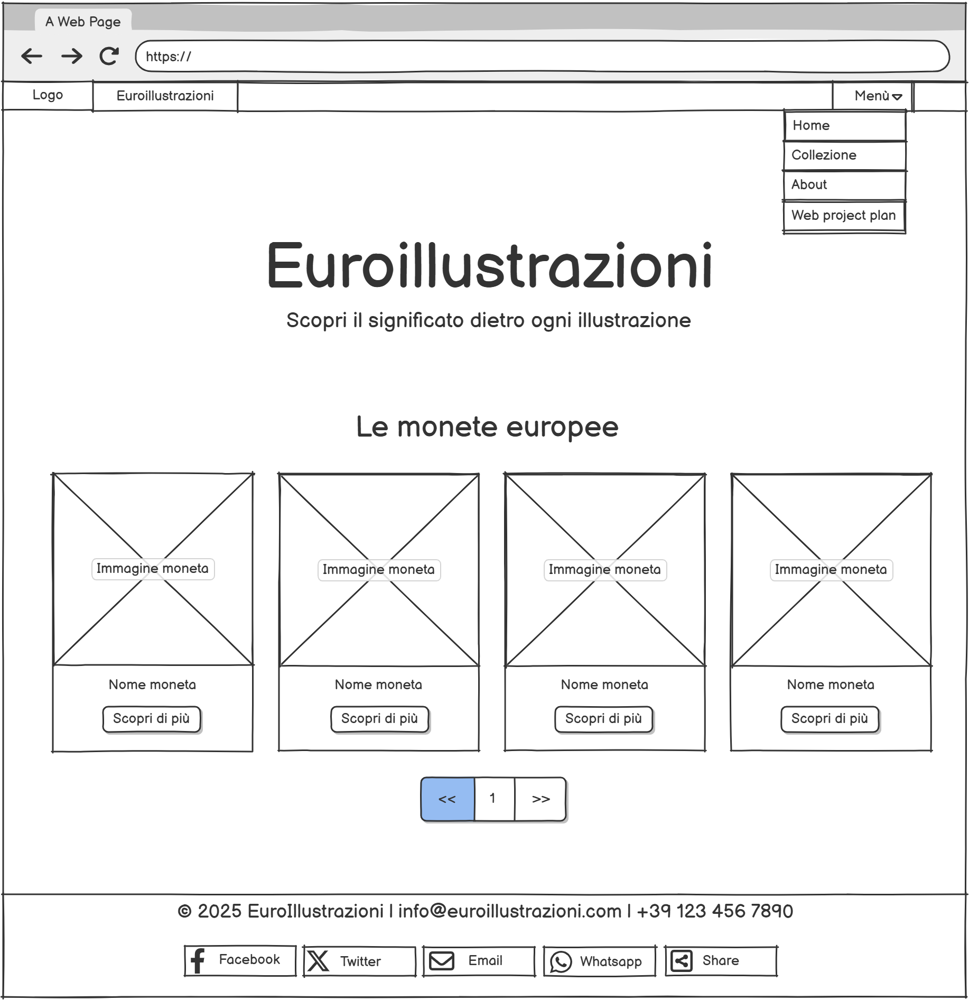
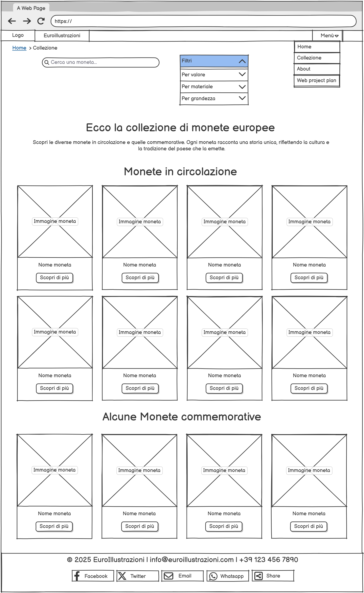
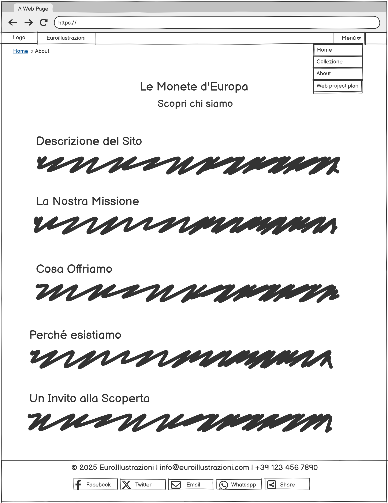
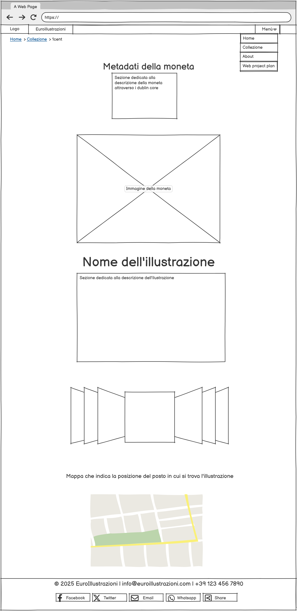

1. Idea (Abstract)
EuroIllustrazioni è un sito dedicato alla scoperta delle illustrazioni sulle monete in euro, con l’obiettivo di fornire informazioni dettagliate sulla storia e il significato culturale di ogni moneta.
Il progetto coprirà tutti questi aspetti:
- Contenuto: Raccolta di immagini e descrizioni delle monete.
- Caratteristiche: Struttura interattiva con schede informative.
- Funzionalità: Navigazione semplice e ricerca avanzata.
- Strumenti: Database di monete, Gallerie, Schede informative per ogni moneta
- Accesso: Ottimizzato per desktop e mobile.
Prima della realizzazione, si verificherà che non esista già un sito simile con le stesse caratteristiche.
2. Brief
Il brief rappresenta il primo confronto con il progetto per la pianificazione del lavoro. È necessario affrontare i seguenti aspetti fondamentali:
- 2.1 Finalità e obiettivi del progetto:
Il progetto EuroIllustrazioni ha l’obiettivo di fornire una risorsa informativa e interattiva che valorizzi il significato culturale delle monete in euro. Attraverso contenuti dettagliati e multimediali, gli utenti potranno esplorare la storia e i simboli delle monete in modo accessibile e coinvolgente.
- 2.2 Pubblico di riferimento:
Il sito è destinato a:
- Appassionati di numismatica
- Storici e ricercatori
- Collezionisti di monete
- Curiosi della cultura europea
- 2.3 Accesso alla risorsa:
Il sito sarà ottimizzato per diversi dispositivi:
- Computer desktop
- Tablet
- Smartphone
Il design multipiattaforma garantirà un’esperienza utente fluida e accessibile a tutti.
- 2.4 Modalità di raccolta dei contenuti e dei dati:
I contenuti verranno raccolti da fonti attendibili e liberamente riutilizzabili, rispettando le licenze di utilizzo. Le principali fonti includono:
- Castel del Monte - Ministero della Cultura per informazioni ufficiali e dettagli storici
- Stupor Mundi per approfondimenti culturali e storici
- Internet generale per la raccolta di immagini
- Google Maps per localizzazioni geografiche
- Wikipedia per informazioni e dettagli storici
I materiali saranno adattati per garantire una lettura chiara e intuitiva, con un’interfaccia user-friendly.
3. Benchmark
Il benchmark consiste nell'analisi di mercato dei principali competitor, valutando contenuti, design, tecnologie e strumenti utilizzati. Questo processo aiuta a comprendere il panorama esistente e a individuare le opportunità di innovazione.
3.1 Aree di analisi
- ✓ Idea: Quali siti trattano già le illustrazioni delle monete in euro?
- ✓ Contenuti esistenti: Analisi di testi, immagini, audio e video già disponibili su altre piattaforme.
- ✓ Design: Studio dell'architettura delle pagine, scelta dei colori, dei font e dei template utilizzati dai competitor.
- ✓ Tecnologie: Valutazione degli strumenti, delle infrastrutture e dei linguaggi di programmazione adottati dai siti concorrenti.
3.2 Analisi dei competitor
Attualmente, diverse piattaforme trattano la numismatica e le monete in euro, tra cui:
- Wikipedia – Offre informazioni di base sulle monete in euro, ma senza un focus specifico sulle illustrazioni.
- Collezioni Euro – Sito dedicato ai collezionisti, con dettagli sulle monete rare e sulle varianti, ma privo di un'esperienza interattiva.
- Banca Centrale Europea – Fonte ufficiale sulle monete in euro, ma con contenuti limitati alle caratteristiche tecniche.
3.3 Perché EuroIllustrazioni è unico?
Rispetto ai competitor, EuroIllustrazioni si distingue per:
- Un’esperienza interattiva che permette agli utenti di esplorare ogni moneta con immagini in alta risoluzione e descrizioni dettagliate.
- Un focus specifico sulla storia e sul significato simbolico delle illustrazioni, non solo sugli aspetti tecnici.
- Una struttura intuitiva con filtri di ricerca avanzati per trovare facilmente le monete per anno, paese o valore.
- Integrazione con mappe e immagini storiche per contestualizzare le monete nel panorama culturale europeo.
3.4 Riutilizzo di strumenti e tecnologie
Nella fase di benchmark, vengono anche individuati strumenti e piattaforme utili per migliorare l’esperienza utente. Alcuni esempi:
- Design: Bootstrap per un’interfaccia responsive e moderna.
- Database: Wikidata per l’organizzazione strutturata delle informazioni.
- Interattività: Google Maps per localizzare le monete sulle mappe.
Questa analisi permette di costruire un sito innovativo, che valorizza gli aspetti culturali delle monete in euro offrendo agli utenti un’esperienza coinvolgente e interattiva.
4. Struttura
La struttura del sito EuroIllustrazioni sarà pensata per garantire una navigazione semplice e fluida, permettendo agli utenti di accedere facilmente ai contenuti e di esplorare le informazioni in modo intuitivo.
4.1 Mappa concettuale
La mappa concettuale offre una rappresentazione visiva delle principali sezioni e dei collegamenti tra i diversi contenuti del sito, facilitando la comprensione della struttura e delle relazioni tra le informazioni.
4.2 Schema delle dipendenze
Lo schema delle dipendenze illustra come le diverse parti del sito siano collegate tra loro, evidenziando le relazioni gerarchiche e funzionali per garantire una navigazione coerente e logica.
4.3 Categorie descrittive
- Nome della Moneta: Indica il nome ufficiale della moneta. (es: 1 Centesimo di Euro - Castel del Monte)
- Creatore: Nome dell’ente o della zecca che ha prodotto la moneta. (es: Zecca dello Stato Italiano)
- Anno di Emissione: L’anno in cui la moneta è stata coniata ed emessa ufficialmente. (es: 2002)
- Soggetto Raffigurato: Descrizione del soggetto o dell’immagine raffigurata sulla moneta. (es: Il Castel del Monte, simbolo dell'architettura medievale sotto Federico II, Patrimonio dell'Umanità UNESCO)
- Titolo dell'Illustrazione: Nome o titolo assegnato all'illustrazione o al disegno presente sulla moneta. (es: "Castel del Monte")
- Descrizione Dettagliata: Una spiegazione approfondita del soggetto raffigurato, del contesto storico e del significato della moneta. (es: La moneta da 1 centesimo di euro raffigura il Castel del Monte, un castello medievale unico per la sua forma ottagonale e legato a Federico II di Svevia. Questo monumento, riconosciuto come Patrimonio dell'Umanità dall'UNESCO, simboleggia l'ingegno architettonico e la potenza del Sacro Romano Impero nel XIII secolo.)
- Immagine della Moneta: Inserire una foto chiara della moneta, preferibilmente del retro in quanto li vi è l'illustrazione.
- Carosello di Immagini: Serie di immagini che mostrano dettagli e particolari dei luoghi/soggetti raffigurati. (es: Immagini del Castel del Monte, il sito che la moneta rappresenta, mostrando la sua architettura unica e le torri ottagonali)
- Mappa della Posizione: Indicazione geografica o riferimento al luogo collegato alla moneta (se applicabile). (es: Castel del Monte, situato a 18 km da Andria, in Puglia, Italia)
5. Layout
5.1 Wireframe Home
Il wireframe della pagina Home presenta una struttura pulita e ben organizzata. In alto si trova una barra di navigazione con il logo e un menu a discesa per accedere rapidamente alle sezioni principali del sito. Il titolo principale "Euroillustrazioni" è accompagnato da un sottotitolo che introduce il tema del sito. Al centro della pagina è presente una griglia di quattro immagini di monete, ciascuna con un nome e un pulsante "Scopri di più" per ottenere ulteriori dettagli. Sotto la griglia è presente un sistema di paginazione che consente di sfogliare altre monete. La pagina si conclude con un footer che contiene le informazioni di contatto e le icone social.
5.2 Wireframe Collezione
Il wireframe della pagina Collezione è progettato per offrire una panoramica sulle monete europee, suddivise tra quelle in circolazione e commemorative. In alto è presente una barra di navigazione con il logo del sito, un menu a discesa e un breadcrumb ("Home > Collezione") che aiuta l’utente a orientarsi all’interno del sito. Subito sotto, un campo di ricerca permette di trovare rapidamente una moneta specifica, mentre un sistema di filtri consente di selezionare le monete in base a criteri come valore, materiale e grandezza. Il titolo principale introduce la sezione, seguito da un breve testo descrittivo che spiega il valore culturale e storico delle monete. La pagina è strutturata in due sezioni principali. La prima è dedicata alle monete attualmente in circolazione, mostrate attraverso immagini segnaposto accompagnate dal nome della moneta e da un pulsante "Scopri di più" per accedere ai dettagli. La seconda sezione è riservata alle monete commemorative, presentate con lo stesso layout della sezione precedente. Nella parte inferiore della pagina, il footer include le informazioni di contatto, un indirizzo email e un numero di telefono, oltre a icone social per la condivisione sui principali canali digitali.
5.3 Wireframe About
Il wireframe della pagina About mostra una struttura chiara e ordinata. Nella parte superiore è presente una barra di navigazione con il logo e un menu a discesa. Subito sotto c'è un breadcrumb ("Home > About") che aiuta a orientarsi nel sito. Il titolo principale "Le Monete d'Europa" è seguito da un sottotitolo che invita a scoprire di più sul progetto. La pagina è organizzata in diverse sezioni, ognuna con un titolo come "Descrizione del Sito", "La Nostra Missione" e "Cosa Offriamo", accompagnate da blocchi di testo segnaposto. Alla fine della pagina c'è un footer che include informazioni di contatto e icone per la condivisione sui social media.
5.4 Wireframe Moneta
Il wireframe della pagina Dettaglio Moneta è strutturato per offrire una panoramica dettagliata su una moneta specifica. In alto è presente una barra di navigazione con il logo e un menu a discesa, seguita da un breadcrumb ("Home > Collezione > 1 cent") che indica la posizione nel sito. Il titolo principale introduce la moneta, seguito da una sezione dedicata ai metadati che fornisce dettagli strutturati secondo lo standard Dublin Core. Al centro della pagina è visibile un'immagine grande della moneta. Subito sotto, è presente il nome dell'illustrazione con una descrizione dettagliata. Dopo la descrizione è inserito un carosello di immagini che permette di visualizzare ulteriori dettagli o varianti della moneta. Nella parte inferiore è presente una mappa che mostra la posizione geografica associata all'illustrazione. Il footer include informazioni di contatto e icone social per la condivisione.
6. Usabilità
Il sito EuroIllustrazioni è progettato per garantire un'esperienza utente fluida, intuitiva e completamente accessibile, seguendo le migliori pratiche di usabilità. Ogni pagina è pensata per essere facilmente navigabile e per fornire agli utenti gli strumenti necessari per esplorare i contenuti senza difficoltà.
6.1 Norme di Usabilità per l'Architettura
La navigazione principale è gestita tramite una navbar che rimane sempre visibile nella parte superiore della finestra grazie alla funzione sticky. Questo permette agli utenti di avere il menu sempre a portata di mano, anche durante lo scorrimento della pagina. Cliccando sul logo o sull'immagine della testata, è possibile tornare facilmente alla homepage.
In tutte le pagine, ad eccezione della homepage, sono presenti le breadcrumbs: questi strumenti di navigazione aiutano l'utente a orientarsi facilmente nel sito e a tornare rapidamente alla homepage o alle sezioni precedenti. Alla fine di ogni pagina è presente un footer, offrendo continuità nella navigazione.
Le pagine sono organizzate in sezioni tematiche ben definite, con particolare attenzione alla struttura del catalogo. Il catalogo è diviso in due macro-sezioni: una per i filtri di browsing e una per la visualizzazione delle monete. Le pagine di raccolta seguono uno schema coerente, creando un ambiente familiare e riconoscibile per gli utenti.
Le pagine dedicate alle monete sono progettate per offrire un'esperienza chiara e facile da usare. Al centro c'è una grande immagine della moneta, che si adatta a qualsiasi dispositivo, accompagnata da una descrizione che racconta la sua storia e il suo significato. Le informazioni principali, come il titolo, il creatore e la data di emissione, sono evidenziate per renderle facili da leggere, e ci sono dei link che permettono di navigare facilmente tra le sezioni. Una barra di navigazione fissa e una serie di indicazioni aiutano a orientarsi e tornare alle pagine precedenti. Il sito è progettato per essere visualizzato al meglio su tutti i dispositivi, e una galleria di immagini permette di navigare facilmente tra le foto dell' illustrazione. Inoltre, c'è una mappa che mostra la posizione dell'oggetto o del monumento rappresentato nell'immagine, se disponibile, per permettere agli utenti di vedere dove si trova nel mondo reale.
Il sito è completamente responsivo grazie all'uso di Bootstrap, che garantisce una visualizzazione ottimale su tutti i dispositivi. Le pagine sono strutturate utilizzando il sistema grid di Bootstrap, assicurando una visualizzazione chiara e ordinata anche su dispositivi mobili. La navbar principale e i canali di navigazione secondaria, accessibili tramite i dropdown della navbar, sono progettati per essere facilmente utilizzabili su qualsiasi dispositivo. Inoltre, sono presenti numerosi link e bottoni che rimandano a diverse sezioni del sito, facilitando l'esplorazione dei contenuti.
6.2 Norme di Usabilità per l'Aspetto e la Tipografia
L'aspetto tipografico del sito è stato progettato per favorire una lettura chiara e una navigazione fluida. È stato scelto il font "Poppins" per il corpo del testo, noto per la sua leggibilità, mentre per i titoli viene utilizzato "Playfair Display", un font elegante che conferisce un tocco distintivo. Il testo principale è di un grigio scuro su uno sfondo chiaro, per garantire un buon contrasto e una lettura confortevole. Gli elementi da enfatizzare, come i link, sono evidenziati con un colore che richiama l'oro, un richiamo ai colori delle monete, mentre i link interni sono evidenziati in blu scuro, richiamando i colori della bandiera dell'Unione Europea. Inoltre, le cards presentano un effetto interattivo che ne aumenta la visibilità quando l'utente ci passa sopra con il cursore.
6.3 Norme di Usabilità per Colori, Font e Icone
I colori utilizzati nel sito sono stati scelti per richiamare quelli delle monete e della bandiera dell'Unione Europea, con il blu scuro e l'oro come tonalità principali. Questi colori non solo creano un contrasto visivo piacevole, ma evocano anche un senso di affidabilità e valore. Il grigio scuro viene utilizzato per il testo, mentre l'oro appare nei dettagli per attrarre l'attenzione e aggiungere un tocco di eleganza. Le icone, facilmente riconoscibili e cliccabili, sono state scelte per facilitare la navigazione e migliorare l'interazione con l'utente, rendendo l'esperienza di esplorazione del sito più intuitiva.
7. Servizi
7.1 Sistemi di Browsing per Valorizzare
La collezione include diversi sistemi di browsing che permettono di filtrare le monete in base a categorie specifiche, come ad esempio il valore, il materiale o la grandezza. Attualmente, è possibile filtrare le monete per valore (ad esempio, 1 cent, 2 cent, 1 euro, ecc.), per materiale (come Rame, Ottone, Nichel, Argento, Oro) e per grandezza (Piccola, Media, Grande). Questi filtri sono accessibili tramite un’interfaccia semplice ed intuitiva che permette agli utenti di affinare la loro ricerca e trovare facilmente la moneta desiderata. In futuro, potrebbero essere introdotti nuovi filtri per arricchire ulteriormente l’esperienza di navigazione, come un filtro per formato o per edizioni speciali. Inoltre, sarebbe interessante aggiungere un filtro basato sui luoghi, attualmente disponibile solo attraverso una mappa interattiva, che consenta agli utenti di esplorare la collezione in modo ancora più dettagliato. Tutti questi strumenti di ricerca avanzata sono pensati per rendere la navigazione nella collezione più fluida ed efficace, garantendo agli utenti un'esperienza di ricerca completa e personalizzabile.
7.2 Utilities e Tool per l'Interazione
Il sito della collezione di monete offre una serie di strumenti e funzionalità che migliorano l'interazione e ottimizzano l'esperienza dell'utente:
- Bottoni: I bottoni presenti sulla pagina iniziale evidenziano il testo al loro interno cambiando colore al passaggio del mouse, creando un effetto visivo che attira l'attenzione. Inoltre, i bottoni permettono di entrare nella pagina di descrizione delle illustrazioni delle monete, offrendo così un facile accesso ai dettagli visivi delle monete e delle loro illustrazioni.
- Accordion: Gli accordion vengono utilizzati nella pagina del catalogo per nascondere i filtri. Questo approccio permette di mantenere la pagina pulita e ordinata, ed è particolarmente utile per dispositivi mobili, dove la visibilità dei filtri può essere espansa o compressa facilmente.
- Card: Le card sono utilizzate per visualizzare le informazioni relative alle monete, creando una separazione chiara tra i diversi contenuti. Ogni card include un pulsante che porta direttamente alla pagina della moneta, facilitando la navigazione.
- Tooltips: I tooltips appaiono solo al passaggio del mouse sopra il logo del sito, fornendo un breve suggerimento o informazione su cosa accade al clic. Questo aiuta a migliorare la chiarezza e l'interattività.
- Dropdowns: Nella navbar è presente un dropdown che consente di accedere rapidamente alla navigazione secondaria, rendendo più semplice l'esplorazione delle varie sezioni del sito.
- Carousel: Nella pagina di descrizione delle illustrazioni delle monete, è presente un carosello che mostra le immagini reali delle illustrazioni. Questo strumento consente di visualizzare le diverse illustrazioni delle monete in modo interattivo, permettendo agli utenti di esplorare i dettagli visivi in modo fluido e coinvolgente.
- Pagination: Nella pagina di apertura, la paginazione permette di visualizzare le monete della collezione in modo interattivo, consentendo agli utenti di navigare facilmente tra le diverse monete senza dover ricaricare l'intera pagina.
- Sticky Header: Il sito include un header sticky, che rimane visibile nella parte superiore della pagina anche durante lo scrolling. Questo garantisce che le opzioni di navigazione siano sempre accessibili senza dover risalire, migliorando l'usabilità durante la navigazione.
7.3 Strumenti, Servizi, Tool e Metodi Aggiuntivi
Il sito include anche alcuni servizi e tool aggiuntivi che migliorano l'interazione e la funzionalità:
- Integrazioni Social: Le integrazioni con ShareThis permettono agli utenti di condividere facilmente contenuti sui social network e di interagire con il sito.
8. Bibliografia
8.1 Software e Web Application Utilizzati:
- Wireframes: Realizzati con Balsamiq Wireframes: https://balsamiq.com/
- Mappa concettuale e schema delle dipendenze: Realizzati con Diagrams.net: https://app.diagrams.net/
- Sito pubblicato: Con Github Pages: https://pages.github.com/
- Integrazione social: Realizzata con ShareThis: https://platform.sharethis.com/
- Codice: Realizzato con Visual Studio Code: https://code.visualstudio.com/
8.2 Testi e Immagini:
- Immagini: Ottenute tramite Google Immagini e da vari siti web specializzati nei temi correlati, dove erano disponibili fotografie pertinenti agli argomenti trattati.
- Testi: Informazioni e testi trovati su https://cultura.gov.it/luogo/castel-del-monte
8.3 Codice:
Utilizzo della documentazione del framework Bootstrap e delle varie sezioni di HowTo di W3Schools.